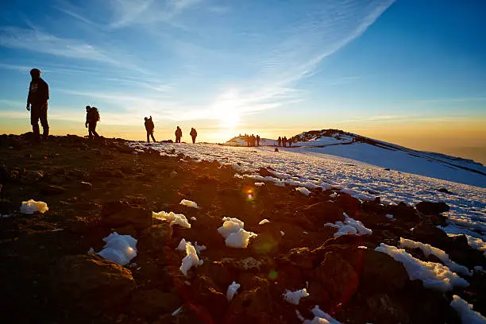
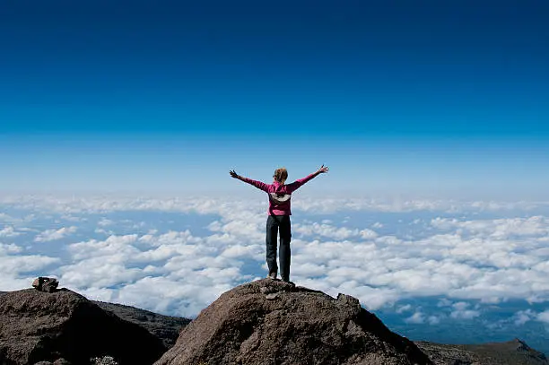
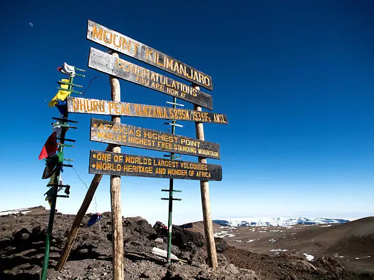

Photo Gallery




Touch the roof of Africa on the world’s highest free-standing mountain.
Mount Kilimanjaro is Africa’s tallest mountain and the highest free-standing mountain in the world, rising majestically above the plains of Tanzania.
The journey to its summit is a life-changing adventure, passing through five distinct climate zones: tropical rainforest, heath, moorland, alpine desert, and finally the icy arctic summit.
Reaching Uhuru Peak is a dream for trekkers worldwide—a moment of triumph above the clouds where sunrise breaks across the African continent below.
Stand at the highest point in Africa.
Watch breathtaking sunrises above the clouds.
Journey through five unique ecological zones.


